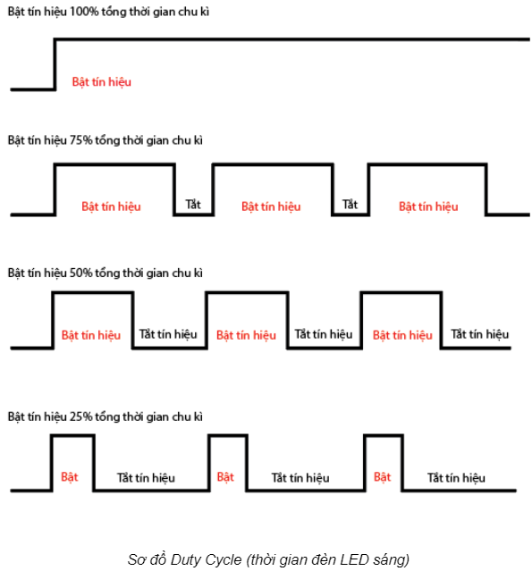
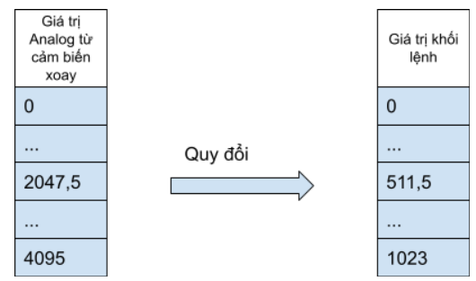

8. Bài học 5: Điều chỉnh độ sáng LED
Mục tiêu
Trong bài học trước, chúng ta đã tìm hiểu về đọc tín hiệu Analog từ cảm biến xoay. Ngoài ra, chúng ta cũng có thể xuất ra tín hiệu Analog thay vì chỉ xuất ra tín hiệu bật tắt bằng các trạng thái HIGH và LOW. Một số ví dụ: điều chỉnh độ sáng đèn LED, thay đổi tốc độ quay nhanh hay chậm của động cơ, cho âm thanh của loa to nhỏ theo ý muốn,…
Trong bài học này, chúng ta sẽ sử dụng tín hiệu Analog Output để tăng giảm độ sáng của đèn LED bằng giá trị của cảm biến xoay.
Kiến thức mới
PWM (Pulse Width Modulation)
Trên thực tế, chip điều khiển không thể xuất ra được tín hiệu Analog thật mà chỉ có thể xuất ra tín hiệu HIGH (bật) và LOW (tắt). PWM là một cách thức thông minh mà chip điều khiển dùng để xuất ra tín hiệu Analog. PWM hoạt động như sau:
PWMchia thời gian thành các chu kỳ ngắn. Tần số (frequency, đơn vị là Hz) là số chu kỳ trong 1 giây.Ví dụ: Giả sử ta chia ra mỗi chu kỳ kéo dài là 0,1 giây (100 mili giây). Khi đó, tần số sẽ bằng:
frequency = 1 / 0,1 = 10 (Hz)Trong trường hợp này, tần số là 10 chu kỳ trong 1 giây (10Hz). -
PWMsẽ bật tắt liên tục trong mỗi chu kỳ này và lặp lại giống nhau ở tất cả các chu kỳ. Độ mạnh yếu của tín hiệuAnalogđược quyết định bởi tổng số thời gian bật trên tổng thời gian của chu kỳ (gọi làduty cycle).
Ví dụ sau sẽ giúp bạn hiểu rõ hơn: Cho thời gian một chu kỳ là 100 mili giây, tần số 10Hz:

Nếu ta muốn đèn LED chỉ sáng 25% so với mức tối đa (mức HIGH) thì PWM sẽ chỉ bật tín hiệu trong suốt 25% thời gian của chu kỳ (25 milli giây) và tắt trong 75% thời gian còn lại.
Nếu ta muốn đèn LED chỉ sáng 50% thì
PWMsẽ bật tín hiệu trong suốt 50% thời gian của chu kỳ (50 mili giây) và tắt trong 50% thời gian còn lại.
{kind=link}
Lưu ý: xController có 16 kênh PWM độc lập (đánh số từ 0-15). Mỗi kênh này có thể cấu hình để sử dụng với tần số và Duty Cycle khác nhau.
Thiết bị cần sử dụng

Kết nối phần cứng

Viết chương trình
Mở phần mềm uPyCraft.
Tạo một file chương trình mới (
File > New) và lưu với tên main.py bằng cách chọn menuFile > Save….Copy đoạn code sau, click vào nút
DownloadAndRunđể chạy chương trình.
rotaryvalue = pin41.read_analog()
while True:
translate_value = translate(rotaryvalue, 0, 4095, 0, 1023)
pin11.write_analog(translate_value)
Giải thích chương trình
rotaryvalue = pin41.read_analog()
Đặt biến rotaryvalue là giá trị tín hiệu Analog ở chân IO được chỉ định. Do cảm biến xoay trả về tín hiệu Analog và được kết nối với cổng số 4 trên xController nên ta dùng pin41.read_analog(). Lúc này biến rotaryvalue sẽ trả về giá trị kiểu số nguyên (int) nằm trong khoảng từ 0 đến 4095.
Tuy nhiên, hàm pin[X][Y].write_analog chỉ nhận giá trị từ 0 đến 1023, trong khi cảm biến xoay có giá trị từ 0 đến 4095, nên ta cần quy đổi các khoảng giá trị này bằng hàm translate sau đây:
translate_value = translate(rotaryvalue, 0, 4095, 0, 1023)
Ta sẽ gán giá trị quy đổi bằng biến translate_value.
Hàm translate() có cấu trúc đầy đủ như sau:
translate(value, min_in, max_in, min_out, max_out)
Hàm translate sẽ quy đổi khoảng giá trị ban đầu thành khoảng giá trị khác mà chúng ta cần. Trong đó:

value là giá trị cần quy đổi.
min_in là giá trị đầu vào nhỏ nhất.
max_in là giá trị đầu vào lớn nhất.
min_out là giá trị ra vào nhỏ nhất.
max_out là giá trị ra vào lớn nhất.
{kind=link}
Xuất giá trị analog ở PORT 4 với giá trị cần xuất ra là kết vừa quy đổi ở trên (translate_value)
pin41.write_analog(translate_value)
Lệnh khởi tạo một Object Pin Analog Write đầy đủ như sau:
pin[X][Y].write_digital((STATE))
Trong đó:
XCó giá trị từ 4 ~ 6 đại diện PORT 4 đến PORT 6 của xController.
YCó giá trị là 1 hoặc 2 tương ứng với 2 đường tín hiệu logic đối với mỗi PORT. Đối với một số module output thì mặc định là 1.
STATECó giá trị là 0 ~ 1023 tương ứng mức điện áp 0 ~ 3.3 volt
Sau khi nạp chương trình vào board, bạn xoay biến trở sẽ thấy sự thay đổi về độ sáng của đèn LED.